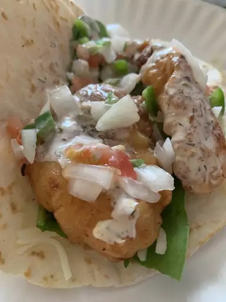

Fish Tacos

Ingredients
- 1 cup all-purpose flour
- 2 tablespoons cornstarch
- 1 teaspoon baking powder
- ½ teaspoon salt
Steps
- Make beer batter: Combine flour, cornstarch, baking powder, and salt in a large bowl. Blend beer and egg in a separate bowl, then quickly stir into flour mixture until combined with a few lumps remaining.
- Make white sauce: Mix together yogurt and mayonnaise in a medium bowl. Gradually stir in fresh lime juice until consistency is slightly runny. Season with jalapeño, capers, cayenne, oregano, cumin, and dill.
- Start fish tacos: Heat oil in a deep-fryer to 375 degrees F (190 degrees C).
Return to Recipes